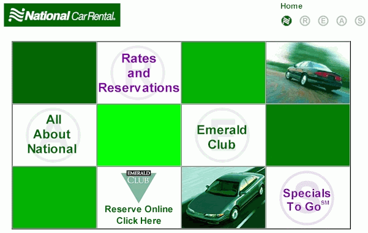
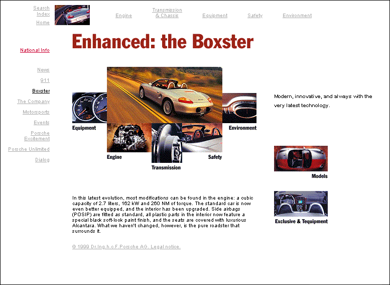

| Seamonkey |
UI Specification
|
|
Search and SmartBrowsing send feedback to the component specific newsgroup |
Last
Modification:
|
Also including Net Navigation and What's related |
|
|
Author German W. Bauer
(Client) |
Status: Implemetable Proposal. Usability testing has to be successful before ship. |
What's
related:
Quick Index: Design Overview |
Feature Team
|
Older spec, superseded |
Summary/Overview
This specification deals with search within Navigator Seamonkey, and it's possible integration with SmartBrowsing. It also deals with cross-application aspects of search such as being able to access other search scopes from a central location.Recent updates
11/1/99: Adding information to URL/search widget behavior and shwoing alternatives for submit behavior. Adding detail to results presentation.Goals
- Exposing Netscape search and smart browsing as the preferred way of navigating the net
- Integration with Netcenter Homepage 3.0
- Integration of What's Related
with Search Results
- This allows users to see both lateral and vertical results (lateral = peer level competiton sites, vertical= literal search results)
- Integration of Search with SmartBrowsing
- Unified entry points for search in general in the UE and across applications:
- Integrate multiple sources and different types of data into search
- Scope of the search is smart, i.e. determined by the context the user is in
- but users can access other search scopes, no matter what context they come from
Target Audience
With the amount of data available on the Net increasing every day, Search has become one of the major activities of end-users. The target user for search is best described by looking at the target user for Seamonkey in general, with emphasis on newcomers, as they will tend to use search as an initial way to get around on the net.Down the line the integration between smart browsing and search will have the same impact that the introduction of automatic shifting had for automobiles.
User Tasks
Fundamental Tasks Intermediate Tasks Advanced Tasks Find a search term on a page currently viewn
Search web pages on the Net (through Netcenter)
View related information while browsing
Search Mail messages
Search other internal data repositories (Bookmarks, Addresses etc)
Search specific data using net-based resources (e.g yellow pages etc)Access smart browsing key verbs Going back to search results page (as a means of navigating)
pick a different search provider for a net query
saving a query for later reuse pick multiple search providers for a net query
Design Overview
|
quick access to search and smart browsing via url bar widget |
|||||||||
|
global access to search via omnipresent search menu |
search results in sidebar (Nav only for Seamonkey) |
||||||||
Design Details
Web Search/Navigation Widget Look and Feel
Widget Design:
[page proxy icon] [type-in field] [type-in-history popdown] [ Search button (submits query)] [key verb popdown]
Overall advantages for this design: |
|
Widget behavior:
- The page proxy icon to the left appears as soon as a site is loaded. It can be dragged to Bookmarks recipients like the Bookmarks bar, the Bookmarks folder, to a mail message etc (like 4.x)
- Just hitting the search button without having manually typed in a term will go to Netcenter search(http://search.netscape.com)
- As soon as the user types anything into the location field the search button acquires a 'default' look, and the location indicator (page proxy icon) goes away. See below under "searching vs navigating" for proposed search behaviors .
- Like today a typed-in-history popdown will let users easily recall previously typed in terms (seperate from history which shows sites that have been visited - see Bookmarks and History specification). Alternative solution here if this makes the URL field to complex: we could add the last x number of typed in terms to a context menu that is used over the URL field and which currently contain Cut, Copy and Paste...
- A key verb popup menu to the right of the search button lists other action verbs such as quote, buy etc.
- Activating any key verb will fill the URL bar with the key verb followed by a helpful prompt in brackets which is selected. For example when users press search, we put
quote [enter stock symbol]
into the URL bar. Being selected this help text would go away as soon as the user starts typing and be replaced with what the user is typing yet leaving the keyverb intact. Over time we expect users to learn understand the use of key verbs. This behavior is also completely 'backwards compatible' with today's key verbs behavior, but we expect it to be much more discoverable.
Searching vs navigating:
- Proposal
1: Pressing the search button yields the same
results as just hitting Enter.
It was found since we cannot easily implement opening the sidebar from JavaScript, that this Proposal would work less well than proposal 2. Proposal 2 also was also found by Netcenter to help reducing the risk of cannibalizing current search revenues, since it retains some of the comaptibility with the current 4.x search button behavior.
- Supports the philosophy that Internet Keywords Results pages = Search Results pages: An underlying philosophy in the development of the Internet Keywords system is that the results pages generated from Internet Keywords should share the same look and feel of Netscape Search. Thus, a request from Internet Keywords (results generated by the Return Key when the text string is not a URL) should be as similar as possible to the Netscape Search results (generated by the Search Button)
- Reduced cognitive load: The user will not need to interpret why the two input methods produce different behaviors. The exception case is quite small Typing in a keyword will generate a search results page (albeit an Internet Keywords search results page) in all cases except when a strong trademark, a unique weak trademark or a unique domain name is used. Generally, it is safe to assume that when a user types in 'Yahoo' and hits the search button, they want to go to Yahoo. Current analysis of search engine logs confirms this -- the most common search terms (apart from porn) are Yahoo, Hotmail, Ebay, etc. It is safe to assume that the users typing in these keywords are not gathering information related to these destinations, rather they are attempting to reach the destinations themselves. If we do drive all Search button clicks to search.netscape.com instead of the Internet Keywords system, novice users may type in Yahoo, click Search (never knowing about the return key behavior) and get a search results page every time. This certainly will not be deemed a pleasant experience.
- 'I'm feeling lucky' is there for a reason: Google uses an 'I'm feeling lucky' button. Pressing it brings the user directly to the most relevant result (in Google's opinion). We have the same opportunity with Internet Keywords, to drive users directly to sites possessing a strong trademark. Remember that users are interested in the destinations, not the search results pages.
- If, however, the user wants a search results page, they can get one...: By using the 'Search' keyword. The search keyword (which will be available in the Keyverb popup menu) sends all queries directly to Netscape Search. Thus, if the user wants all information they can get on Yahoo, they can select 'Search' and type Yahoo, or simply type 'Search Yahoo'.
- Proposal
2: Hitting Enter and pressing the search button
do two different things:
recommended proposal (reasoning see above)
-
Enter works like 4.x whereas clicking the search button presents you with search results for the term just typed. Unless the text entered in the URL field is a well-formed URL, in which case we are executing the URL, even when the search button is pressed. Here are the pros for this approach:
- If users can explicitly distinguish between 'going there' and doing a search. This is relevant when we encounter a strong trademark. There is fear that in Proposal 1 users do not have a discoverable option to search on say "McDonalds", because we are always directing them to the site directly. [How often is search being used with strong trademarks - are we looking at an edge case here?]
- In Proposal 1 presentation of search results does rely on the sidebar being open which is something we cannot guarantee, as users may close or hide their sidebar alltogether. In addition the related/smart search panel might also be not currently in sight. Proposal 1 thus requires additional resources devoted to creating JavaScript methods to open the sidebar on demand, and additional to bring a certain panel into view. This will annoy users when the panel gets opened in those 're-direct' cases (strong trademarks), as they have specifically set the sidebar to be hidden.
- In Proposal 1 search relies solely on the Sidebar to provide search results in those cases where we encounter a strong trademark. Some users may find the results presentation in the sidebar lacking of detail information for each search result due to space constraints.
Advanced Search Dialog (name to be finalized)
This is the universal in the client . This will be invoked through the menu (globally accessible).The upper portion of this global search window will feature a list (popup menu or radio button TBD)of search options to choose from, such as e.g. Bookmarks, Addressbook entries from the client side and a dynamically updateable part from the Netcenter with entries such as Web Pages, People and Businesses, Local Area etc.
This same general dialog may also get invoked when selecting e.g. "Search Messages..." from the menu when the user is in Messenger, in this case the aforementioned selector will get preset to "Mail Messages".
This entry point will provide a consistent access to Client UI and Netcenter Searches to the extent it makes sense. User can do any kind of search they want from here independent of current application context, though the default search will be set according to how you access this window (access from Messenger then search defaults to mail, etc.
Some local search results if those will be displayed in a list in a separate local window like e.g. bookmarks and mail messages or address book searches. This window is provided by the appropriate application. Other web based search results like WWW searches get displayed as shown below in both the content area and the Sidebar.
As for Navigator this dialog will let users set advanced search options not currently available in the URL based search such as picking your search engine (or multiple ones) tec.
Globally accessible entry points to search across applications
Search Menu for Browser and Mail (Address book, chat etc will be similar)
Structure
Find invokes the find dialog directly related to finding on the currently viewn page or message.
The next item will search the parent container for contents, for the browser that's the Web, for Mail that are all the mail folders.Middle Section (global acc)
Contains access to the all-in-one SmartSearch dialog as well as "the other" top-level containers that can be searched. Web and Mail are trading placing for each respective componentThird Section (global acc)
Contains access to Searches for specific data using net-based resources (e.g. yellow pages etc)
Results presentation
Design:- Results are to be presented similar, no matter what technology (search or smart browsing) they are based on.
- We're going to BLEND the results of Alexis Related and and Search/SmartBrowsing databases, meaning that it doesn't matter what mode you're in, you'll get a similar taxonomy of results.
- When hitting on a strong trademark, we will direct users to that site in the content area, but also offer them "other" search results in the smart search/related sidebar panel.
- Search and Smart Browsing results are to be presented inside the Sidebar (for Seamonkey this is Navigator specific, may be extended later) as well as in the content area.
- Results in the Sidebar are to be abbreviated such that each major results category would only show 3 most relevant results.
- Groupings in the results panel in the sidebar are to be presented as a flat list with simple separation lines in order to make optimal use of the space.
- Folder are to be avoided if possible in order to not make users have to resize the related/smart search panel just to see results, and also avoid having to use multiple actions just to get to the results.
- The most recently used query is provided as a link at the bottom of the results list in the sidebar panel in addition to a folder that stores those results. The link simply lets them get back to a results page, whereas opening the folder shows the actually recent retrieved results, and may have subfolders with older saved searches.[Need to fine tune wording and results here]
- This way users can use this link as a persistent anchor when clicking through links on the page and come back to their Smart Browsing listing easily. We believe the main reason users want persistency is to come back to their results more easily. This way users can use this folder as a persistent anchor when clicking through links on the page
> When at a site (National car rental)
Note the differences/similarities to when typing in "National" (weak trademark) as shown below
Smart Search 
> When typing in term to navigate or search
Benefits to Netscape:When query term is a strong trademark, a unique weak trademark or a unique domain name
Smart Search 
When query term contains a non-unique weak trademark (National)
Smart Search
When query term contain generic terms (bicycling)
Smart Search


- Stickiness: users can quickly get back to the Netcenter search page rather getting lost and driven away by a trail of links that originated in the results page. Navigator will support them in finding their way back.
Other
Preferences
TBDError Messages and Dialogs
TBD
Condition Message User Choices